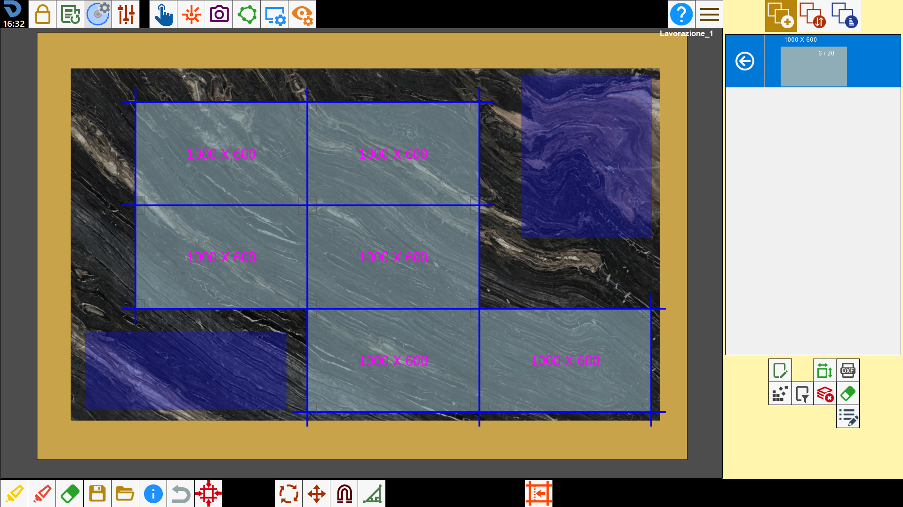

La funzione di Nesting serve per disporre in maniera automatica ed ottimizzata i pezzi all’interno del perimetro della lastra.

Come utilizzare la funzionalità
Per usare questa funzione è necessario creare una lista di pezzi e delimitare il perimetro su cui si vogliono inserire.

Dopo di che premere il pulsante: il programma disporrà automaticamente i pezzi all’interno del perimetro della lastra.
I pezzi vengono inseriti sulla lastra considerando poi l'utilizzo del sistema di movimentazione del materiale con ventose per la risoluzione delle collisioni fra i pezzi e considerando i difetti segnati sulla lastra stessa.
Se la soluzione trovata non è di gradimento, è possibile ripremere il pulsante per applicare nuovamente il Nesting e trovare una configurazione diversa.
Il programma rimuoverà tutti i pezzi presenti sull’area di lavoro per poter eseguire il Nesting.
La funzione Nesting dispone i pezzi seguendo diverse logiche di inserimento, per questo motivo ogni volta che viene premuto il pulsante il programma modifica la disposizione dei pezzi, fino a un massimo di 4 soluzioni (al quinto tentativo viene riproposta la prima soluzione).
Il programma dispone i pezzi in 4 differenti modi per permettere all’utente di confrontare e decidere la disposizione migliore.
Alcuni esempi
Di seguito vengono mostrati alcuni esempi di utilizzo della funzione di Nesting.
Può essere utilizzata per disporre più velocemente pezzi dalla forma semplice.

Questa funzione trova la disposizione e la combinazione di pezzi per riempire la maggiore area di lastra possibile.

Il Nesting non inserisce nessun pezzo all’interno delle aree da evitare della lastra.

È possibile lavorare con perimetri di lastra dalla forma qualsiasi.

Se sono presenti più perimetri, il Nesting dispone i pezzi in ognuno di essi.